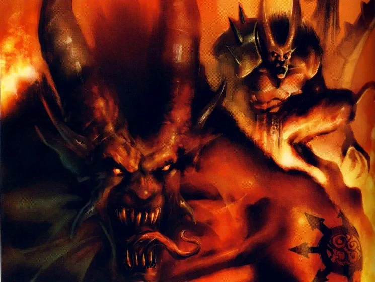
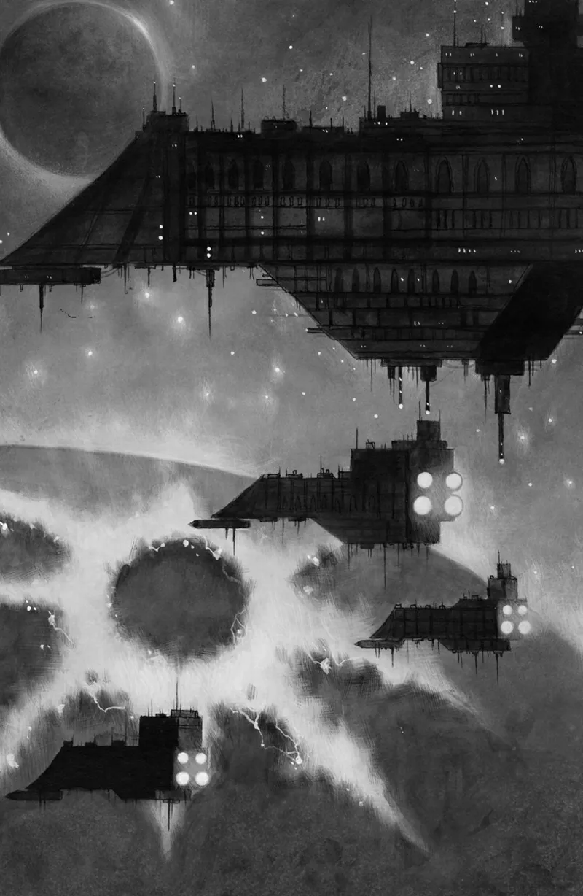
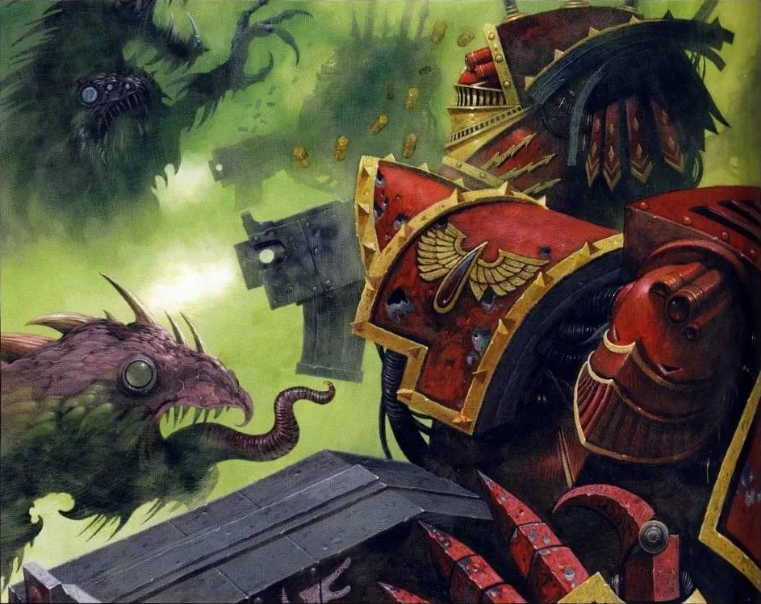
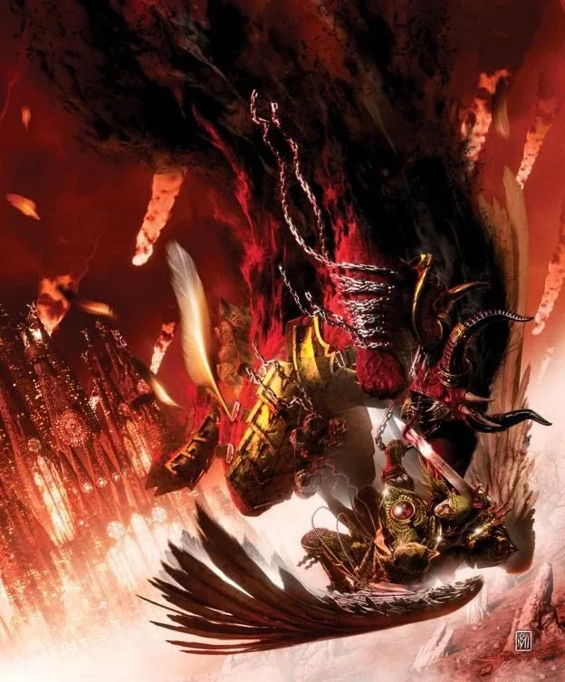
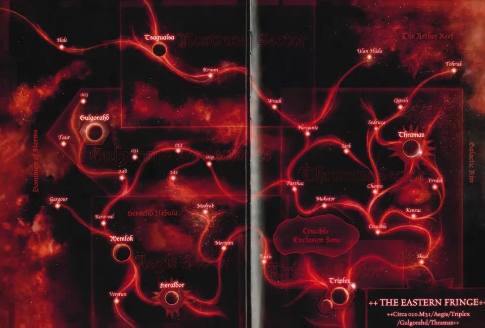
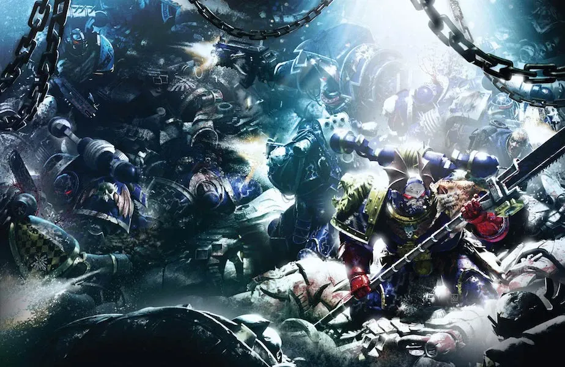
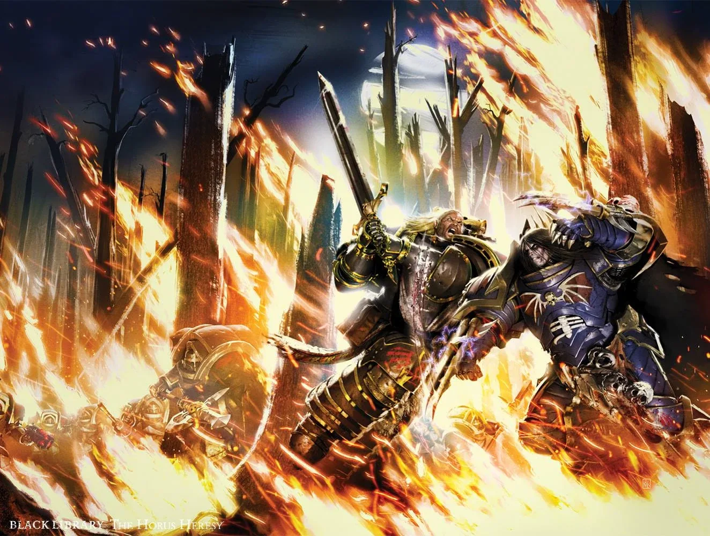
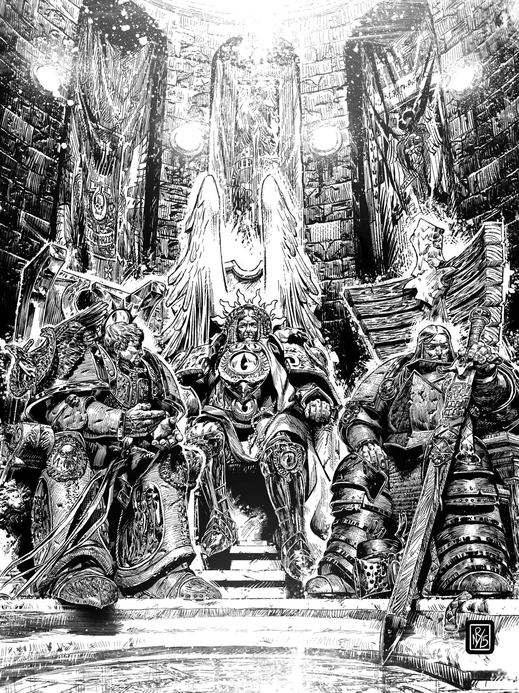
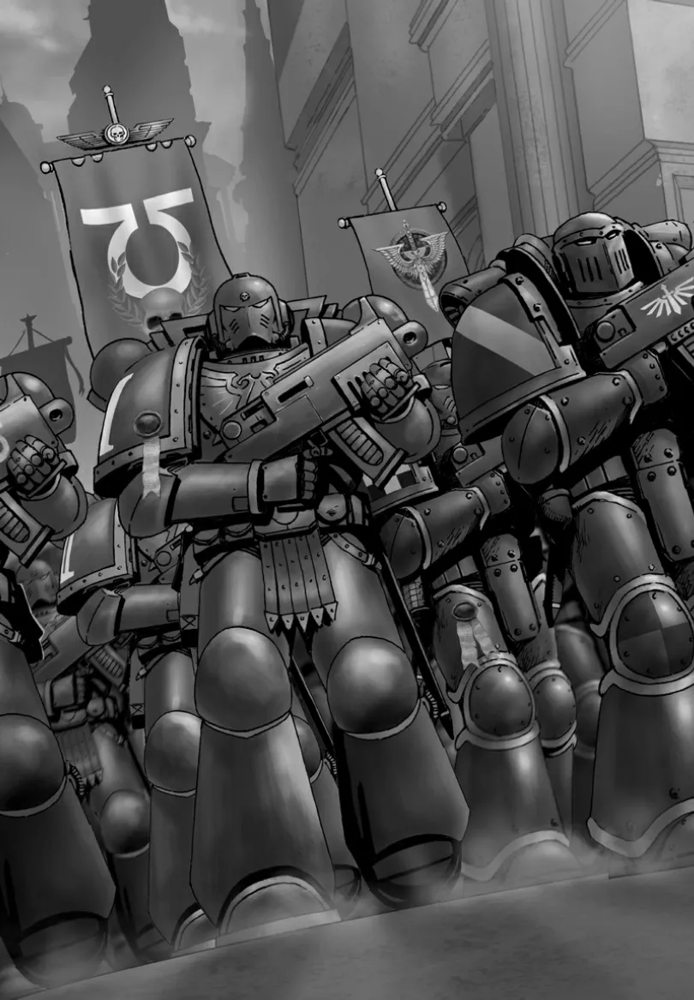

01ภาพรวม: อีกฝั่งของพายุ
หลังเหตุการณ์ที่ Calth พายุ Warp ขนาดมหึมาชื่อ Ruinstorm ตัดกาแล็กซีฝั่งตะวันออกออกจาก Terra แสง Astronomican หายไป การสื่อสารขาด ฝั่งตะวันออกมี Legion ภักดีที่แข็งแกร่งที่สุดสามกองติดอยู่ — แต่ละกองเผชิญสงครามของตัวเอง:
Blood Angels
ถูก Horus ส่งไปที่ Signus Cluster ซึ่งกลายเป็นดินแดนของปีศาจ
Dark Angels
ไล่ล่า Night Lords ของ Konrad Curze ทั่วภาคตะวันออก (Thramas Crusade)
Ultramarines
ฟื้นตัวจาก Calth และรวม Ultramar ไว้เป็นที่มั่นสุดท้าย
คำถามเดียวกัน
ไม่มีใครรู้ว่า Terra ยังอยู่หรือไม่ จักรพรรดิยังมีชีวิตหรือเปล่า
02Signus: กับดักของ Horus สำหรับ Sanguinius

ความลับของ Blood Angels
ก่อน Heresy Horus เคยเห็น Sanguinius สังหารทหารของตัวเองในซากวิหารต่างดาว Sanguinius สารภาพว่าพันธุกรรมของ Legion มีข้อบกพร่อง — ทหารบางคนจะคลั่งเลือดจนไม่เหลือความเป็นมนุษย์ เขาปิดเรื่องนี้ไว้ไม่ให้ใครรู้ เพราะกลัวว่า Legion จะถูกลบเหมือน Legion ที่ II และ XI Horus สาบานว่าจะเก็บความลับนี้ — แต่หลังตกเป็นของ Chaos เขาใช้มันเป็นอาวุธ
Signus Cluster
Horus สั่งให้ Blood Angels ทั้ง Legion (ราว 120,000 นาย เรือ 382 ลำ) ไปปราบ "การจลาจล" ที่ Signus Cluster ระบบดาวสามดวงอาทิตย์ใกล้ใจกลางกาแล็กซี ความจริงคือดาวทั้งระบบถูกพิธีกรรมของ Word Bearers เปลี่ยนเป็นโลกปีศาจ ประชากรกลายเป็นศพไร้กระดูก เมืองทั้งเมืองมีชีวิตและโจมตีผู้มาเยือน


Ka'bandha และ Red Angel
ผู้นำฝูงปีศาจคือ Ka'bandha Bloodthirster ของ Khorne กับ Kyriss ปีศาจของ Slaanesh Ka'bandha เผยความจริงเรื่องการทรยศของ Horus ให้ Sanguinius รู้ และพยายามปลุกความคลั่งในพันธุกรรมของ Blood Angels ให้ระเบิดออกมา — ทหารนับพันคลั่งเลือดจนสู้แบบไม่สนชีวิต
Blood Angels ชนะในที่สุด Sanguinius ตัดศีรษะ Kyriss และระบบดาวทั้งหมดถูกประกาศเป็น "Mortae Perpetua" (ตายตลอดกาล) แต่ราคาที่จ่ายคือความมืดที่ฝังในวิญญาณของ Legion ซึ่งต่อมาจะกลายเป็นคำสาป Black Rage และ Red Thirst ที่ Blood Angels แบกมาจนถึงยุค 40K

03Thramas Crusade: Lion กับ Night Haunter
ทางตะวันออกสุดของกาแล็กซี Horus ส่ง Night Lords ไปทำลาย Forge World ทั้งสามของระบบ Thramas เพื่อตัดแหล่งผลิตอาวุธของฝ่ายภักดี Konrad Curze ใช้ยุทธวิธีก่อการร้ายตามแบบของเขา สังหารหมู่และทรมานจนทั้งภาคหวาดกลัว Forge World สองดวงถูกทำลาย อีกดวงเสียหายหนัก
Dark Angels ของ Lion El'Jonson ตามมาพบร่องรอยความโหดร้าย และสงครามระหว่างสอง Legion ก็ดำเนินไปนานหลายปี เป็นการปะทะระหว่าง "อัศวิน" กับ "ผู้ก่อการร้าย" ทั้ง Lion และ Curze เป็นนักยุทธศาสตร์ระดับสูง
Lion กับ Curze ดวลกันหลายครั้ง ทั้งบนเรือรบและบนดาว Tsagualsa ที่ Night Lords ใช้เป็นฐาน ครั้งหนึ่งทั้งสองบาดเจ็บสาหัสจนลูกน้องต้องลากออกจากกัน สงครามจบด้วยความพ่ายแพ้ของ Night Lords Curze หายไป และ First Captain Jago Sevatarion (Sevatar) ถูก Dark Angels จับตัว



04Imperium Secundus: จักรวรรดิที่สอง
เมื่อมองไม่เห็นแสง Astronomican มาหลายปี และไม่มีข่าวจาก Terra Guilliman เริ่มเชื่อว่า Terra อาจล่มสลายไปแล้ว ในฐานะนักวางแผนที่คิดถึงทุกความเป็นไปได้ เขาตัดสินใจรักษา "ความฝันของจักรพรรดิ" ไว้ด้วยการตั้ง Imperium Secundus (อิมพีเรียม เซคุนดัส — จักรวรรดิที่สอง) บนดาว Macragge ในปี 009.M31
เครื่องมือสำคัญคือ Pharos อุปกรณ์ต่างดาวบนภูเขาของดาว Sotha ที่ส่งแสงนำทางและสื่อสารได้แม้ในพายุ Warp ทำให้ Ultramarines ยังเดินเรือได้
ทำไมไม่ใช่ Guilliman?
Guilliman ไม่ยอมขึ้นเป็นจักรพรรดิเพราะมันดู "เหมือน Horus" เกินไป เขาเสนอให้ Lion เป็นผู้ปกครอง แต่เมื่อ Sanguinius พา Blood Angels ที่บอบช้ำจาก Signus มาถึง Macragge Guilliman ก็โน้มน้าวให้ Sanguinius รับตำแหน่ง เพราะเขามีความสูงส่งของจักรพรรดิมากที่สุด ผู้ปกครองสามคนของจักรวรรดิใหม่คือ:
Sanguinius
Imperator Regis — ประมุขแห่งรัฐ ผู้สำเร็จราชการแทนจักรพรรดิ
Lion El'Jonson
Lord Protector — ผู้บัญชาการทหาร คล้ายตำแหน่ง Warmaster
Roboute Guilliman
Lord Warden — ผู้บริหารจัดการจักรวรรดิ

ภัยจากภายใน
Konrad Curze แอบเข้ามาบน Macragge ก่อเหตุระเบิดฆ่าตัวตายและจลาจลต่อต้าน Guilliman จน Lion ต้องประกาศกฎอัยการศึกและใช้อาวุธทำลายล้างกับพื้นที่กบฏ สร้างความบาดหมางระหว่าง Lion กับ Guilliman จนเกือบลงไม้ลงมือ สุดท้าย Lion จับ Curze ได้และนำตัวขึ้นพิจารณาคดี (แม้ภายหลัง Curze จะหลุดรอดไปได้อีก)


05จุดจบของจักรวรรดิที่ถูกลืม
เมื่อมีหลักฐานชัดเจนว่า จักรพรรดิและ Terra ยังอยู่ ผู้ปกครองทั้งสามจึงยุบ Imperium Secundus ทันที ดินแดนทั้งหมดกลับคืนสู่จักรวรรดิเดิม จากนั้นทั้งสาม Legion พยายามฝ่า Ruinstorm ไปช่วย Terra แต่มีเพียง Blood Angels ที่ไปถึงทันการปิดล้อม หลังศึกครั้งที่สองที่ดาว Davin ทำให้พายุอ่อนกำลังลง
Imperium Secundus เป็นเรื่องที่ Guilliman ถือว่าเป็นความผิดพลาดครั้งใหญ่ที่สุดของตัวเอง เพราะการตั้งจักรวรรดิใหม่ขณะที่จักรวรรดิเดิมยังไม่ล่มก็เป็นการทรยศรูปแบบหนึ่ง หลังฟื้นคืนชีพในยุค 40K เขาไม่ต้องการให้ใครรู้เรื่องนี้ จึงถูกเรียกว่า "The Unremembered Empire" (จักรวรรดิที่ถูกลืม)
สำหรับ Sanguinius ช่วงเวลานี้เป็นบทสุดท้ายก่อนเขาจะไปพบจุดจบบน Terra — ที่ซึ่ง Ka'bandha รอเขาอยู่ที่ประตู Eternity Gate และ Horus รออยู่บนเรือ Vengeful Spirit
06แหล่งข้อมูลและหมายเหตุ
เนื้อหาหน้านี้สรุปและแปลเป็นภาษาไทยจากบทความใน Warhammer 40k Wiki (Fandom) ซึ่งเรียบเรียงจากหนังสือ Codex, หนังสือชุด Horus Heresy ของ Forge World และนิยาย Black Library ด้านล่างนี้ (ตรวจสอบ ต.ค. 2026)
เนื้อเรื่อง Warhammer ถูกเขียนเพิ่มและแก้ไขมาตลอดหลายสิบปี ปี จำนวน และรายละเอียดบางจุดต่างกันไปตามหนังสือแต่ละเล่ม หน้านี้ใช้ฉบับที่แหล่งอ้างอิงส่วนใหญ่ยอมรับ และบอกไว้เมื่อมีหลายฉบับ